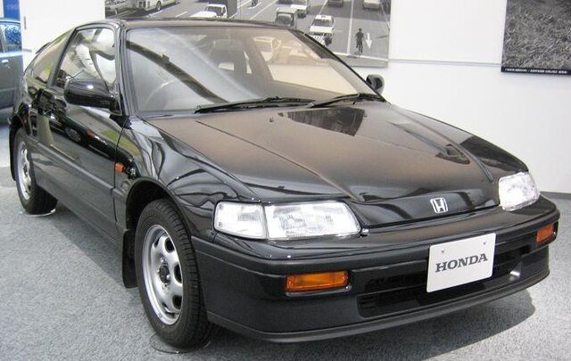
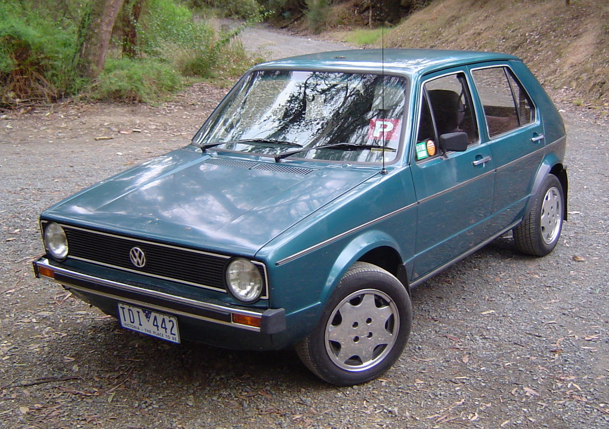

Honda CR-X
Honda CR-X este o mașină sport compactă produsă de Honda între anii 1983 și 1991. A fost concepută ca o mașină cu două locuri și a fost foarte apreciată pentru performanțele sale sportive și pentru designul său compact și ușor.
Iată câteva aspecte cheie despre Honda CR-X:
Design: Honda CR-X a fost cunoscută pentru designul său compact și aerodinamic. Modelele timpurii aveau o linie de acoperiș distinctivă și o spate cu aspect sportiv, contribuind la imaginea sa iconică.
Performanță: Deși disponibilă în mai multe variante și modele, Honda CR-X a fost apreciată pentru performanțele sale sportive în ciuda dimensiunilor reduse. Modelele sportive, precum CR-X Si și CR-X HF, erau populare pentru agilitatea și economia de combustibil.
Motorizare: Honda CR-X a fost echipată cu o varietate de motoare, inclusiv variante cu injecție de combustibil și tehnologii avansate pentru acea perioadă.
Caracteristicile interiorului: Interiorul era simplu și ergonomic, iar multe modele aveau un acoperiș targa (panou acoperit și detasabil), oferind o experiență de conducere apropiată de senzația unui cabriolet.
Popularitate în tuning: Honda CR-X a devenit o alegere populară în comunitatea auto-tuning datorită designului compact, a greutății reduse și a potențialului de performanță.
Evoluția modelului: Modelul a evoluat pe parcursul anilor, cu diverse actualizări și modificări. O variantă notabilă este CR-X del Sol, care a fost produsă între 1992 și 1998 și a preluat tradiția modelului original.
Este important să menționăm că Honda CR-X nu mai este produsă în forma sa originală din anii '80 și '90, dar rămâne în memoria entuziaștilor auto ca o mașină sport compactă iconică. Dacă sunteți interesat de Honda CR-X, poate fi util să explorați piața auto second-hand sau să vă alăturați comunității de entuziaști Honda pentru a afla mai multe despre modelele și modurile de întreținere.
Volkswagen Golf 1
Volkswagen Golf Mk1, cunoscut și sub numele de Volkswagen Golf I, a fost primul model din seria de automobile compacte produse de Volkswagen. A fost lansat în 1974 și a avut un impact semnificativ asupra industriei auto, stabilind un nou standard pentru mașinile compacte.
Iată câteva caracteristici cheie ale Volkswagen Golf Mk1:
Design revoluționar: Golf Mk1 a fost proiectat de Giorgetto Giugiaro și a introdus un design de caroserie hatchback cu două volume și cinci uși, care a devenit ulterior foarte popular în segmentul mașinilor mici.
Eficiența spațiului: Una dintre caracteristicile cheie ale Golf Mk1 a fost eficiența sa în utilizarea spațiului. Designul său compact a oferit o interior spațios, iar configurația hatchback a facilitat accesul la spațiul de depozitare.
Variante de motorizare: Golf Mk1 a fost disponibil cu o gamă de motoare, începând de la motoare mici cu patru cilindri, până la versiuni GTI sportive, care au fost printre primele mașini de producție de serie cu o abordare sportivă în categoria compactă.
Popularitate și impact cultural: Volkswagen Golf Mk1 a fost extrem de popular în Europa și în alte părți ale lumii, devenind un simbol al mașinilor compacte și eficiente. A contribuit semnificativ la consolidarea poziției Volkswagen pe piața auto globală.
Evolutie continuă: Golf Mk1 a evoluat de-a lungul anilor cu diverse actualizări și îmbunătățiri. Modelele GTI au devenit faimoase pentru performanțele lor sportive și manevrabilitatea agilă.
Moștenire durabilă: Golf Mk1 a stat la baza liniei de modele Golf ulterioare, care au continuat să fie foarte populare și influente în industria auto. Golf este recunoscut drept unul dintre cele mai bine vândute modele din lume.
De-a lungul decadelor, Volkswagen Golf a evoluat semnificativ, ajungând la generația a opta la momentul meu de cunoaștere (ianuarie 2022). Cu toate acestea, Golf Mk1 rămâne un model emblematic și are o poziție specială în istoria automobilelor, fiind apreciat atât pentru designul său inovator, cât și pentru influența sa durabilă în industrie.
BMW Seria 3 E30
BMW Seria 3 E30 este o generație de automobile compacte produse de BMW între anii 1982 și 1994. Aceasta a fost a doua generație a Seriei 3 și a fost disponibilă în diverse variante, inclusiv modele sedan, coupe, break și convertible. E30 a fost foarte apreciată pentru manevrabilitatea sa excelentă, performanțele sportive și designul clasic al automobilelor BMW.

Iată câteva aspecte cheie despre BMW Seria 3 E30:
Design clasic: E30 a prezentat un design echilibrat și iconic al caroseriei, cu un profil elegant și liniile distinctive ale marcii BMW. Modelele disponibile includ sedan, coupe, break și convertible.
Variante de motorizare: E30 a fost oferit cu o gamă diversificată de motoare, de la motoarele cu patru cilindri până la cele cu șase cilindri, în funcție de model și specificații. Modelele sportive M3 E30 au fost echipate cu motoare mai performante și au devenit ulterior legendar în lumea motorsportului.
Manevrabilitate și performanțe: E30 a fost cunoscută pentru manevrabilitatea sa agilă și pentru caracteristicile sportive ale șasiului. Aceasta a contribuit la reputația Seriei 3 ca fiind o mașină care oferă o experiență de conducere plăcută și dinamică.
Interior și confort: Interiorul E30 a reflectat atenția la detalii caracteristică mărcii BMW. Materialele de calitate superioară și ergonomia au contribuit la confortul și stilul interiorului.
M3 E30: Modelul M3 E30 este una dintre cele mai celebre variante ale Seriei 3 E30. A fost dezvoltat pentru a satisface cerințele de omologare pentru motorsport și a devenit un icon al mașinilor sport compacte.
Moștenire durabilă: BMW Seria 3 E30 este considerată de mulți entuziaști drept unul dintre cele mai bune modele BMW produse vreodată. Mașinile bine întreținute și restaurate din această generație sunt încă căutate în rândul colecționarilor și pasionaților de mașini clasice.
BMW Seria 3 E30 a jucat un rol semnificativ în consolidarea reputației BMW în segmentul mașinilor compacte și a stabilit standardele pentru modelele următoare din Seria 3. Este adesea privită cu nostalgie și respect în comunitatea auto pentru caracteristicile sale sportive și designul clasic al anilor '80 și începutul anilor '90.
Volvo P1800

Iată câteva caracteristici cheie ale Volvo P1800:
Design atractiv: P1800 a fost conceput de Pelle Petterson și a avut un design elegant și atractiv, cu linii curbe și o formă distinctivă a caroseriei. Modelul a fost produs sub supravegherea producătorului italian de automobile, Carrozzeria Pietro Frua.
Motorizare: P1800 a fost echipat cu motoare cu patru cilindri, iar variantele ulterioare au beneficiat de actualizări ale performanțelor.
Evoluția modelelor: Modelul a fost lansat inițial ca P1800, iar ulterior a fost îmbunătățit și redenumit în funcție de anumite actualizări și modificări, inclusiv P1800S și P1800E.
Popularitate în media: Popularitatea P1800 a crescut semnificativ datorită apariției în serialul TV "The Saint". Personajul principal, Simon Templar, condusese un Volvo P1800 alb în această serie, ceea ce a consolidat imaginea automobilului în conștiința publicului.
Durabilitate și fiabilitate: Volvo P1800 a dobândit o reputație pentru durabilitate și fiabilitate, ceea ce a contribuit la longevitatea sa și la păstrarea unui număr semnificativ de exemplare în stare de funcționare.
Moștenire și colecționabilitate: De-a lungul anilor, P1800 a devenit un obiect de colecție pentru entuziaștii de mașini clasice. Modelele bine întreținute și restaurate sunt căutate în rândul colecționarilor și participanților la evenimente auto clasice.
Este important să menționăm că P1800 a fost o contribuție semnificativă la istoria automobilistică a Volvo și este privită cu apreciere și nostalgie de către iubitorii de mașini clasice. Entuziaștii și colecționarii apreciază în continuare P1800 pentru designul său distinctiv și pentru rolul său în cultura automobilistică.
Mercedes W115
Mercedes-Benz W115 este o generație de automobile produsă de producătorul german Mercedes-Benz între anii 1968 și 1976. Această serie a fost parte a liniei de modele E-Class și a inclus variante precum sedanul și break-ul. Iată câteva aspecte cheie despre Mercedes-Benz W115:

Design și caroserie: W115 a fost disponibil în principal sub forma unui sedan cu patru uși, dar și sub forma unui break cu cinci uși. Designul său a fost semnat de designerul Paul Bracq și a reflectat stilul elegant și robust specific Mercedes-Benz din acea perioadă.
Motorizare: W115 a fost echipat cu o varietate de motoare cu patru și șase cilindri, oferind opțiuni pentru diferite nevoi de performanță și eficiență.
Inovații de siguranță: Modelul W115 a introdus mai multe inovații în materie de siguranță pentru acea perioadă, cum ar fi o zonă de impact frontală controlată și un sistem de frânare asistat.
Calitatea construcției: W115 a fost apreciat pentru calitatea construcției și durabilitatea sa. Această serie de modele a fost concepută cu un accent deosebit pe robustețe și fiabilitate.
Versiuni diesel: W115 a fost printre primele modele Mercedes-Benz care au fost oferite cu motoare diesel, contribuind la popularizarea motorizărilor diesel în gama de vehicule de pasageri.
Moștenire: Mercedes-Benz W115 a avut un impact semnificativ asupra reputației Mercedes-Benz în ceea ce privește durabilitatea și calitatea construcției. De-a lungul anilor, multe exemplare au fost păstrate și restaurate de entuziaști, iar unele servesc în continuare ca mașini de zi cu zi.
Este important să menționăm că W115 a fost succedat de modelul W123, care a continuat tradiția de fiabilitate și a stabilit noi standarde în ceea ce privește siguranța și eficiența. Seria E-Class de la Mercedes-Benz a evoluat și a continuat să fie una dintre cele mai apreciate serii de mașini de lux.